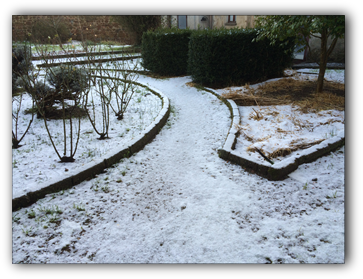
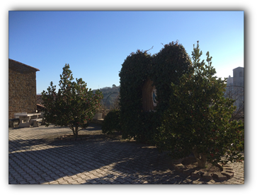
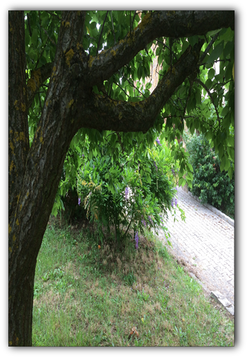

| contact information | where we are | |||
| Monastero di Santa Chiara Via Malintoppa 12 01020 Acquapendente (VT) info@monasterodiacquapendente.it |


History
Our town of Acquapendente already boasted of the presence of the Friars Minor during the lifetime of our Seraphic Father, St. Francis, who, passing through the area, asked some of his brethren to remain here, in a poor little Friary near the River Paglia. In 1255 the church known as Santa Maria del Borgo was granted them, which later received the additional name of St. Francis. The church still exists to this day.
From the very beginning, according to the testimony of Tossignano and other historians, the friary attached to the church was home to noteworthy religious, remarkable for their eloquence. Outstanding amongst them was Fr. Thomas of Acquapendente, who was Minister Provincial of the Roman Province as well as Apostolic Penitentiary during the Pontificate of Pope John XXII. Alongside the friars there were Franciscan tertiaries as well from the first years of the friary.
It was that particular Father Provincial, Fr. Thomas of Acquapendente, who, aided by the people of the town, built the Monastery of Saint Clare in 1333. This Monastery is mentioned by historians such as Blaeu and De Rossi. The place chosen where to build the Monastery was the hill a little above the Florentine Gate, known as “the Citadel” or “Massaro’s Knoll,” where in times past the ancient fortress had stood.
From the very beginning, according to the testimony of Tossignano and other historians, the friary attached to the church was home to noteworthy religious, remarkable for their eloquence. Outstanding amongst them was Fr. Thomas of Acquapendente, who was Minister Provincial of the Roman Province as well as Apostolic Penitentiary during the Pontificate of Pope John XXII. Alongside the friars there were Franciscan tertiaries as well from the first years of the friary.
It was that particular Father Provincial, Fr. Thomas of Acquapendente, who, aided by the people of the town, built the Monastery of Saint Clare in 1333. This Monastery is mentioned by historians such as Blaeu and De Rossi. The place chosen where to build the Monastery was the hill a little above the Florentine Gate, known as “the Citadel” or “Massaro’s Knoll,” where in times past the ancient fortress had stood.


The deed granted to the nuns bears the date of June 6, 1333, and is signed by John of St. Theodore, Cardinal Legate of Pope John XXII.
The founding community of Poor Clares was composed of nuns from the monasteries of Orvieto and Bagnoregio (the hometown of St. Bonaventure, the great Minister General considered the second founder of the Franciscan Order), as well as aspirants from Acquapendente itself and its environs. With a Brief bearing the date of December 23, 1562, Pope Pius IV placed the Monastery of St. Clare beneath the authority and protection of Cardinal Sforza, Camerlengo of the Holy Roman Church.
In 1810, Napoleon Bonaparte drove away the nuns, usurping the Monastery and its church, laying waste to their patrimony and plundering it. The altarpiece was stolen in that period and the community’s archives were burned. On paper, the nuns returned to the Monastery in 1815, but in truth they had not abandoned it at all, living in the meantime within the holy walls in secular dress. We can, thus truly say that our Monastery boasts an uninterrupted presence of Poor Clares dating back nearly seven hundred years.
In 1810, Napoleon Bonaparte drove away the nuns, usurping the Monastery and its church, laying waste to their patrimony and plundering it. The altarpiece was stolen in that period and the community’s archives were burned. On paper, the nuns returned to the Monastery in 1815, but in truth they had not abandoned it at all, living in the meantime within the holy walls in secular dress. We can, thus truly say that our Monastery boasts an uninterrupted presence of Poor Clares dating back nearly seven hundred years.

By God’s grace, after more than forty years of aridity, the present monastic community is at the beginning of a new flowering of vocations in these last years, under the motherly protection of the Immaculate. Echoing the first days of the Order, which during St. Clare’s lifetime reached France, Spain and Bohemia, St. Clare chooses her daughters not only from Italy but from the New World; in fact, throughout Poor Clare history a great number of saints have left their homeland to follow Christ through Clare: St. Veronica Giuliani, Bl. Florida Cevoli, and St. Mary Crucifixa all left their own city-states to enter in others, Margaret Sinclair left Scotland for England, Sr. Mary of the Trinity left Switzerland for Jerusalem.
© 2014 - 2019